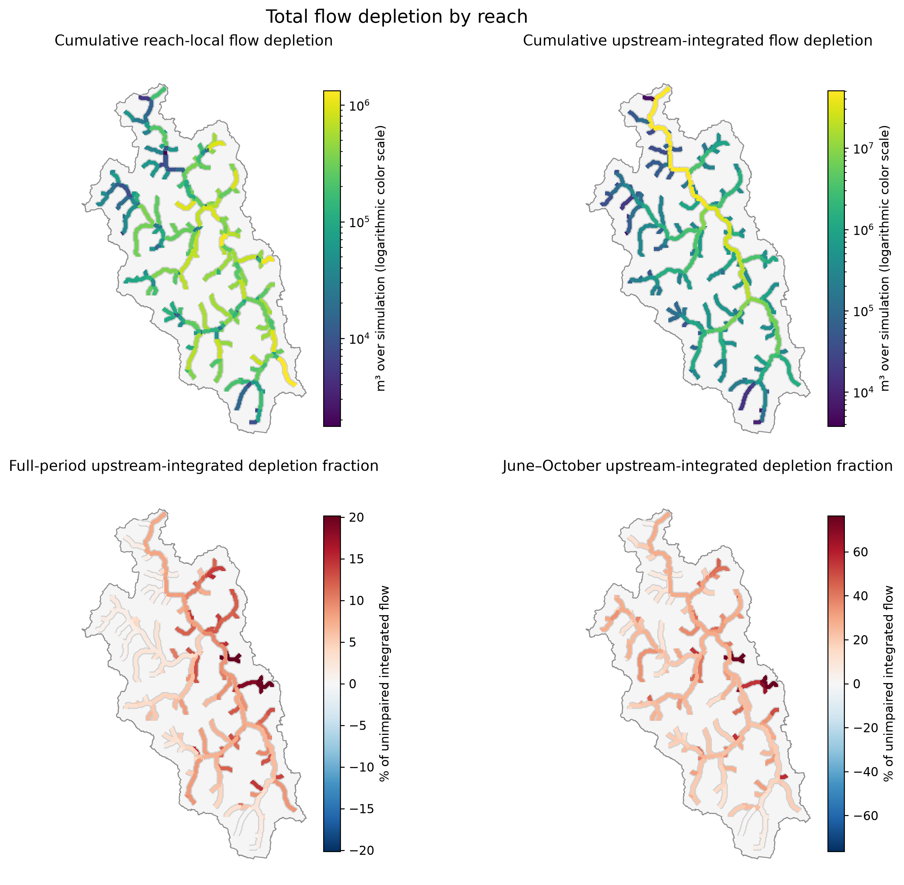
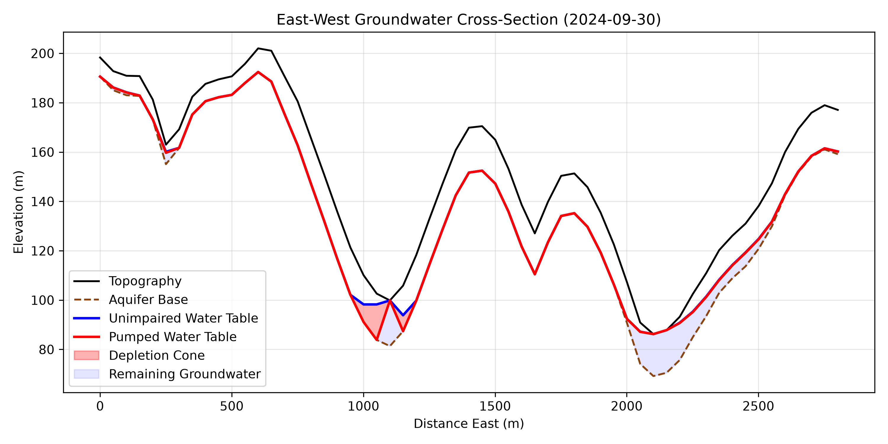

Boundary
GeoPackage, Shapefile, GeoJSON, KML, or another GeoPandas-readable polygon.
Catchment-scale groundwater modeling
A reproducible Python workflow for paired unimpaired and pumped groundwater simulations using Landlab’s Dupuit–Boussinesq component. Build the forcing, validate the domain, run the model, and trace the response through the stream network.
Small Green Valley subwatershed · water years 2011–2024 · screening model, not a calibrated forecast

The product is the workflow
The inputs are too consequential for a file-picker to hide them. A versioned YAML file keeps spatial data, dates, hydrogeology, pumping, numerical settings, and requested outputs together. Preflight checks fail early—before an expensive simulation begins.
Choose a boundary, DEM, hydrogeologic rasters, dates, recharge source, and optional wells and pumping schedule.
Align inputs, build forcing, identify streams and the outlet, and verify coverage, topology, storage, and run scale.
Spin up once, then compare otherwise identical unimpaired and pumped groundwater states with daily water-balance checks.
Export the outlet time series, spatial reach tables, maps, cross-sections, animations, and a complete reproducibility record.
python scripts/run_workflow.py \
--config configs/green_valley.yml \
--stage allStages can be resumed independently: dem, hydrogeology, recharge, preflight, groundwater, and plots.
Inputs
GeoPackage, Shapefile, GeoJSON, KML, or another GeoPandas-readable polygon.
A DEM for the active grid, drainage network, stream cells, and model elevations.
Transmissivity, depth to bedrock, and specific yield supplied as named raster inputs.
Daily recharge from prepared data or the PML evapotranspiration plus PRISM precipitation workflow.
Optional mapped well locations and calendar-month or dated extraction schedules.
Actual outputs
Outlet depletion remains available as a familiar daily CSV. The distributed products add compact Parquet time series and joinable GeoPackage geometry for every reach, with local and upstream-routed accounting kept distinct.

Machine-readable
streamflow_depletion_*.csvDaily basin-outlet resultreach_daily.parquetLocal and routed daily reach valuesreaches.gpkgNetwork geometry and summariessimulation_metadata_*.jsonInputs, hashes, settings, and checksExplore a completed run
Step through the prepared grid, paired outlet hydrographs, pumping response, depletion through time, reach-by-reach maps, and a model cross-section. The explorer is static and self-contained—no server or model rerun required.
Where a GUI could help
If a graphical layer becomes worthwhile, the maintainable version is a small local wizard that selects files, validates required fields and coordinate systems, writes the YAML, runs preflight, and then hands off to the same CLI. The solver, provenance, and acceptance checks should remain in one code path.